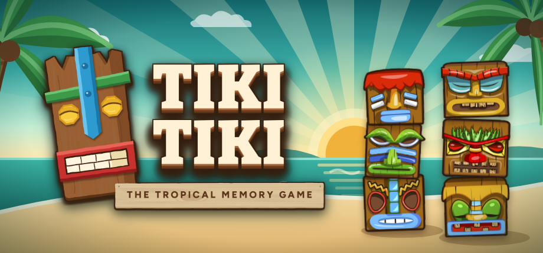
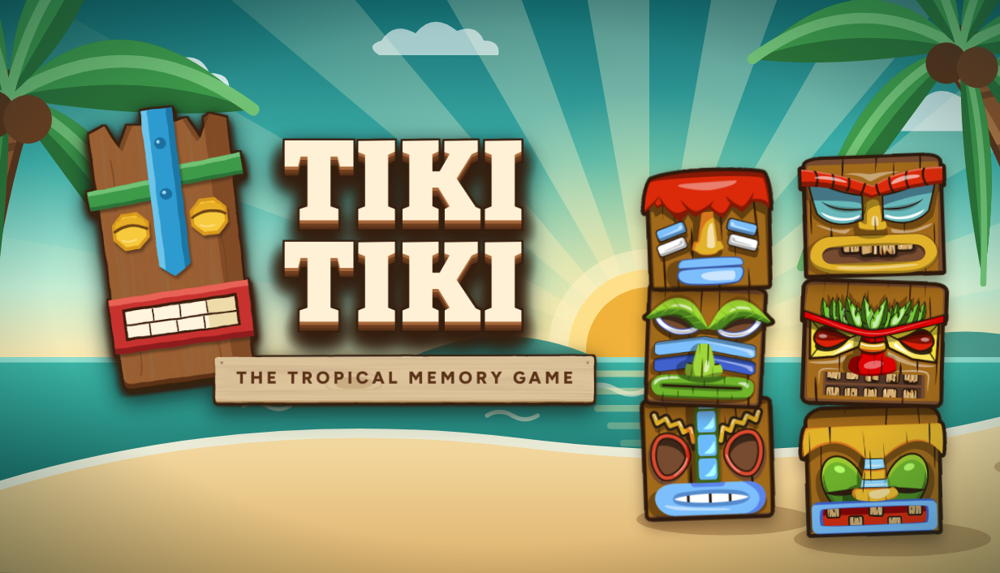
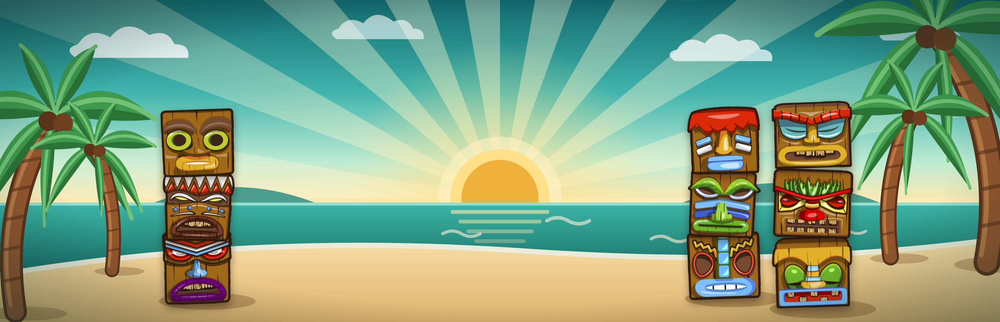
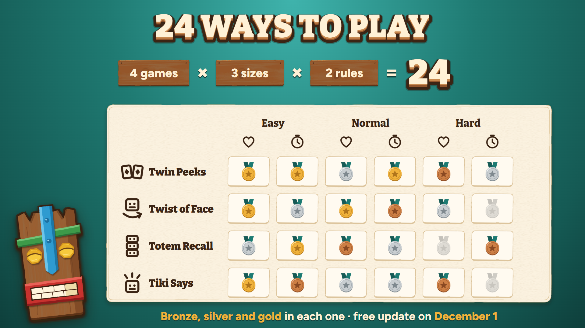
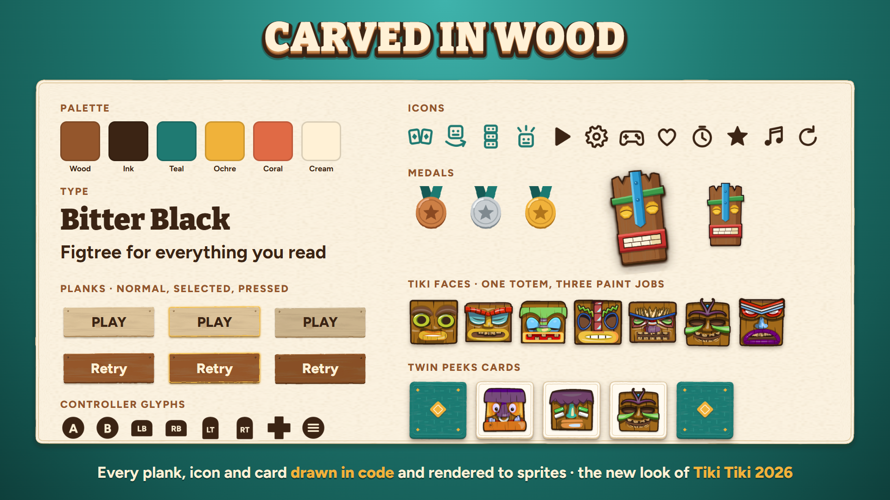
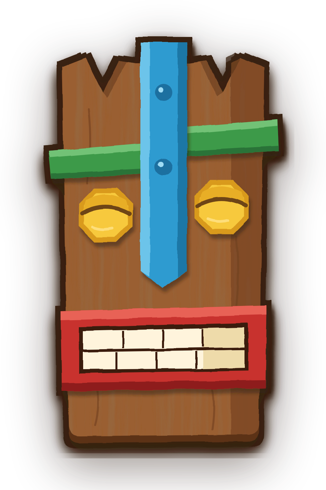
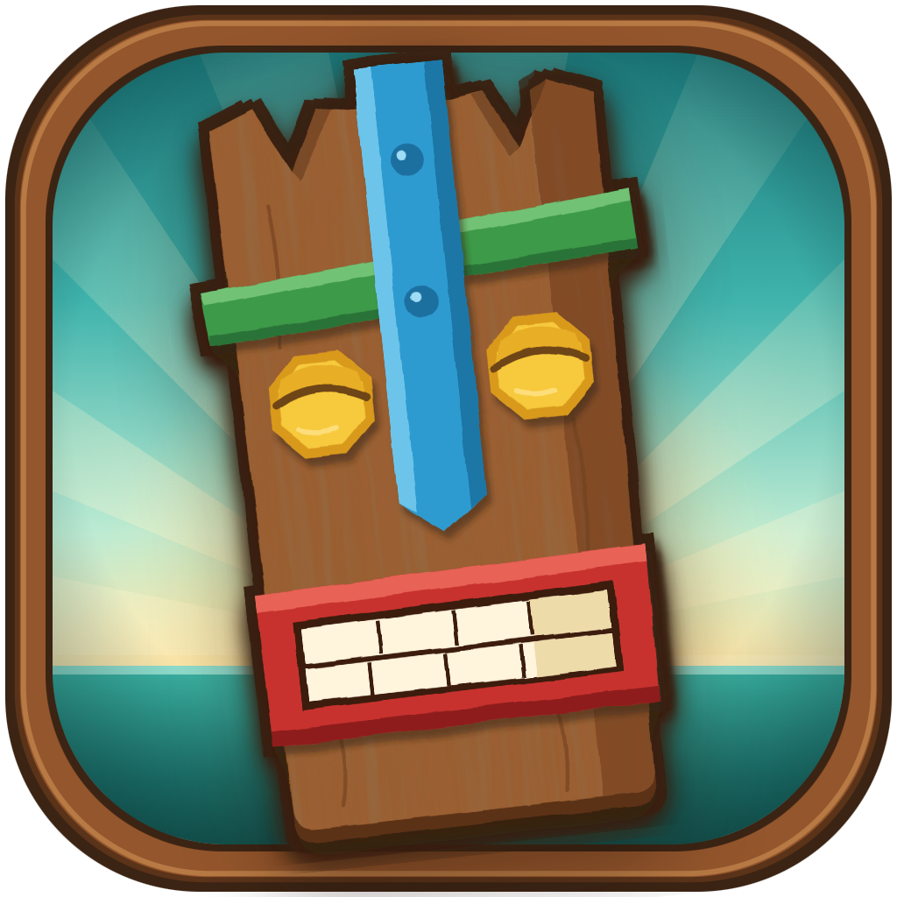

Factsheet
| Game | Tiki Tiki: The Tropical Memory Game |
| Developer and publisher | Cosmic Works (Ciudad Real, Spain) |
| Made by | Alberto Blanco, with art and music by the 2020 team (see the credits below) |
| First release | 28 August 2020, on Steam |
| Relaunch | 1 December 2026, as a free update for everyone who already owns it |
| Platforms | Windows, macOS and Linux, on Steam |
| Price | $3.99 · 3,99 € · £3.49 (25 % off from 1 to 8 December) |
| Languages | English, Spanish, French, German and Brazilian Portuguese |
| Controls | Controller, or mouse and keyboard |
| Steam | store.steampowered.com/app/1300950 |
| Contact | contact@cosmicworks.es |
| Social | X: @CosmicWork · Bluesky: @cosmicworks.bsky.social |
In one line
A memory game played with tiki totems on a tropical beach. It first came out in 2020 and comes back on 1 December with a new look and a fourth game.
Description
Tiki Tiki is a memory game where everything is done with carved wooden tikis stacked into totems. There are four games in it:
- Twin Peeks: you get a few seconds to look at a board of cards before they flip over, then you find the pairs.
- Twist of Face: the tikis turn left or right, one after another, and you repeat the turns in the same order.
- Tiki Says: the tikis light up and play a note each, Simon-style, and you repeat the sequence.
- Totem Recall (new this year): the game shows you, one at a time, which face each tiki has to end up showing. Then you turn them into place from memory and press Guess before the time runs out.
Each game has three sizes and two rules. In Challenge there's no clock. You have three lives and a goal to reach, and a long enough streak gives you a life back. In Time Attack the clock only counts down while it's your turn, and you get a bit of time back for every hit. That's 24 ways to play, and each one keeps its own best score and its own bronze, silver and gold medal. On top of that there are 24 Tiki Trials (small one-off feats) and 23 Steam achievements.
The story
I released Tiki Tiki on Steam on 28 August 2020. I sold it as a brain-training game for families, which was probably a mistake. The ten people who reviewed it liked it, but very few found it in the first place, and I left it alone for years.
This year, before starting anything new, I went back to it. I moved it to Unity 6 and redrew every menu and button so they look carved from the same wood as the totems. The three original games got new names and better rules, and I added Totem Recall. You can now play the whole thing with a controller, on Windows, macOS, Linux or a Steam Deck. If you bought it in 2020, you get the update for free.
Alberto Blanco, Cosmic Works
Features
- Four games: Twin Peeks, Twist of Face, Tiki Says and Totem Recall
- Three sizes and two rules for each, 24 setups in total
- A best score and three medals for every setup, plus 24 Tiki Trials and 23 Steam achievements
- Plays fully with a controller or with mouse and keyboard, and the on-screen prompts match what you're using
- Games that last a few minutes
- English, Spanish, French, German and Brazilian Portuguese
Art










Logos






Credits
| Game design | Alberto Blanco |
| Programming | Alberto Blanco |
| 2D art | Óscar Casanova · Guillermo Rodilla |
| 3D art | Zuriñe Romero · Cristian del Olmo |
| Music & sound | Carlos Fernández · Iñaki Piérola |
| Testers | Raquel Camacho · Celia Ossorio · Jesús Manuel Blanco |
| Special thanks | Wendy Rivero · Ricardo Lara · Carlos "King195" · Doradoro.com · Miguel "PsicoVoxel" García · Óliver González |
Using this material
You can use anything on this page to write about Tiki Tiki or to stream it and make videos of it, monetized or not. If you'd like a key, email me at the address above.